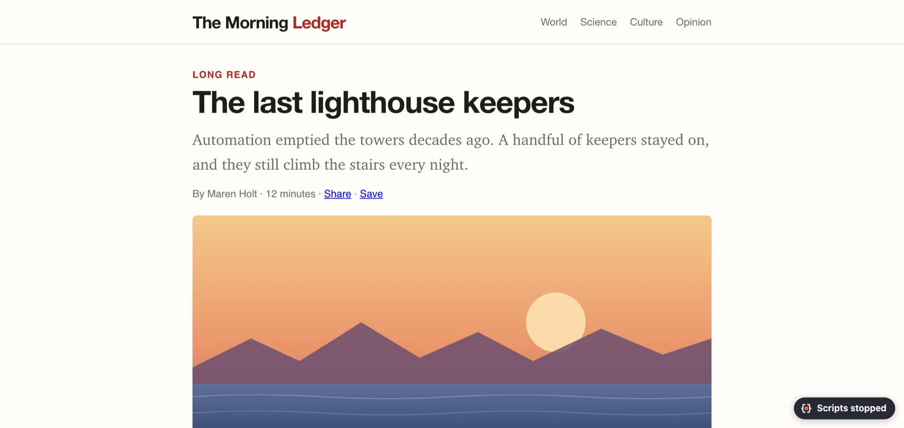
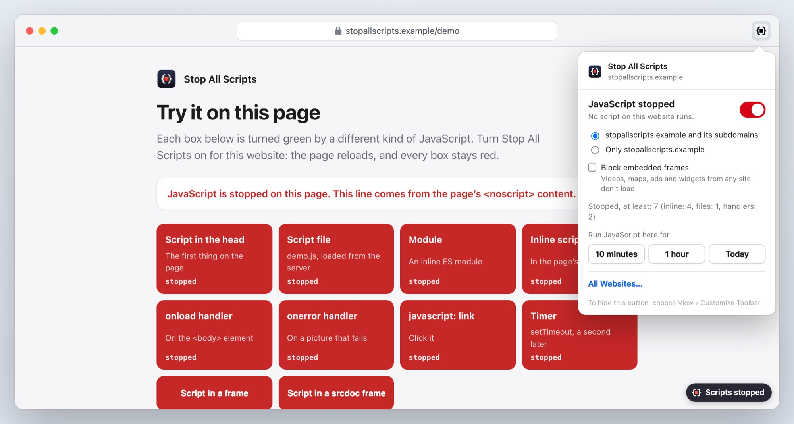
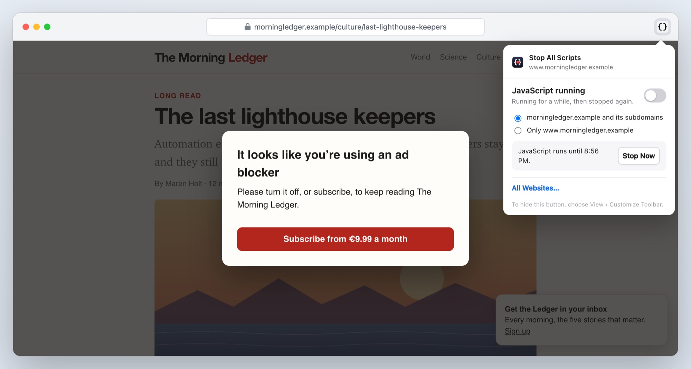
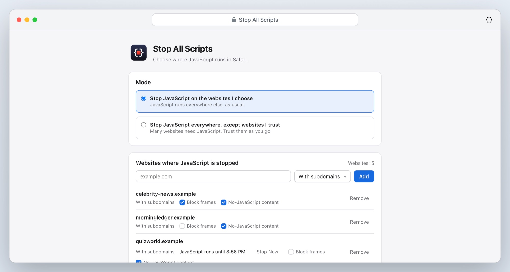
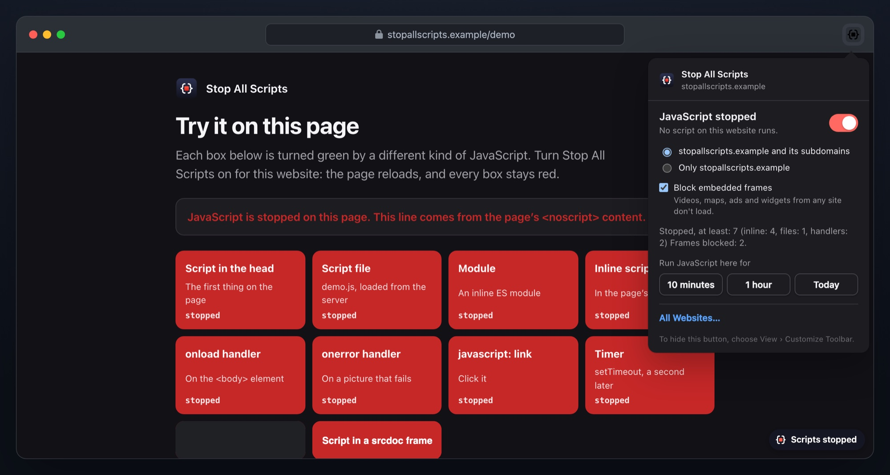

A Safari extension for Mac, iPhone and iPad
A Safari extension for Mac, iPhone and iPad
Stop the scripts. Keep the page.
Some websites are better without their JavaScript: no “ad blocker detected” walls, no pop-ups asking for your email, no page that jumps while you read. Stop All Scripts turns JavaScript off on the websites you choose, and leaves every other website as it is.
€1.99 once, for Mac, iPhone and iPad · Safari 18 or later · No data collected

One switch per website
No account to make and nothing to set up.
1. Turn it on
On a website that misbehaves, open the toolbar menu and turn the switch on. On a Mac you can also press ⌃⇧J.
2. The page reloads
Without a single script: the text, the pictures and the links are there; the overlays and pop-ups are not.
3. Need a script?
Let JavaScript run for 10 minutes, an hour or the rest of the day. It stops again by itself.
Every script, not just some
Content blockers can stop script files, but not the scripts written into the page itself. Stop All Scripts stops them all, before the first one runs.
Complete
Inline, files, handlers, frames
Scripts inside the page, script files from any server, event handlers, javascript: links, and the scripts of the page’s own frames. The demo page shows each kind: with the switch on, every box stays red.
- Stopped before the first script runs, on the first load
- Optionally, block every embedded frame: videos, maps, ads and widgets from other websites
- See how many scripts were stopped, on the toolbar button and in the menu

When you need it
JavaScript for 10 minutes
Some pages need a script for one thing: a search box, a comment form, a video. Let it run on that website for a while, and it stops again on its own.
- 10 minutes, an hour, or the rest of the day
- “Stop Now” whenever you’re done

Your list
Every website in one place
The websites page lists every website you’ve chosen, with search and per-website options. Choose a whole website with its subdomains, or one exact address.
- Two modes: stop JavaScript on the websites you choose, or everywhere except the ones you trust
- Back up your list to a file, and restore it on another Mac, iPhone or iPad

Readable
Pages stay pages
What a website shows browsers without JavaScript is shown, and pictures that wait for a script are loaded anyway. A small “Scripts stopped” sign tells you why a page looks different; one tap hides it.

And all the small things
Private
No account, no analytics, nothing sent anywhere. Your list of websites stays in Safari on your device.
Mac, iPhone and iPad
One purchase for all three. On iPhone, the menu is in the page menu beside the address.
Light and dark
The menu and the websites page follow your device.
Eleven languages
English, German, French, Spanish, Italian, Portuguese (Brazil and Portugal), Japanese, Korean, and Chinese (Simplified and Traditional).
No settings at page start
The stop is set up ahead of time for the websites you chose, so nothing has to be looked up while a page starts.
Sensible scope
A whole website with its subdomains, or one exact address. An exact address can choose differently from its website.
Stop All Scripts
€1.99 once
- One-time purchase, no subscription, no account
- Mac, iPhone and iPad with one purchase
- macOS 14 or later, iOS and iPadOS 18 or later, with Safari 18 or later
- Every feature included
Prices in other countries are set by the App Store.
Questions
Why does it need access to the websites I visit?
To stop a page’s scripts before the first one runs. A click after the page has loaded would be too late, so the stop is set up ahead of time for the websites you chose. Stop All Scripts keeps nothing from the pages, keeps your list on your device and sends nothing anywhere.
How is this different from a content blocker?
Content blockers can stop script files, but not scripts written into the page itself, which is where many walls and pop-ups come from. Stop All Scripts stops both, and event handlers and javascript: links too.
Will websites break?
Some will: many web apps can’t work without JavaScript at all. That’s why it’s off everywhere until you turn it on for a website, and why you can let JavaScript run for a while with one click.
What about frames from other websites?
A frame from another website, such as an embedded video, runs its own scripts unless that website is stopped too. Turn on “Block embedded frames” for a website to keep every frame on it from loading.
Does my list sync between my Mac and iPhone?
Not yet. Each device keeps its own list; you can move it with Export and Import on the websites page.
What data does it collect?
None. Read the privacy policy.